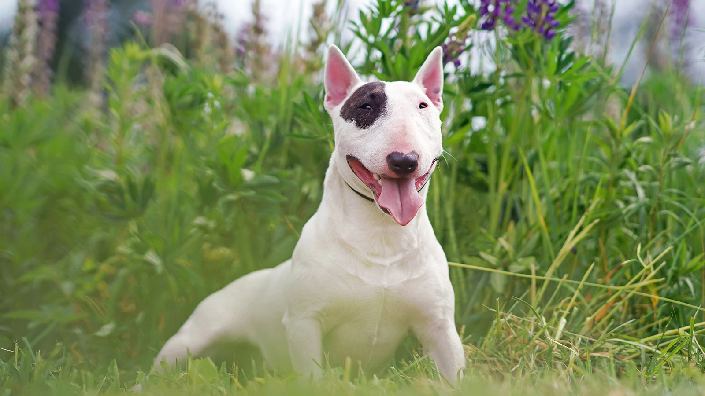

страница про собак
Соба́ка — домашнее животное,
одно из наиболее популярных животных-компаньонов. Домашняя собака была
описана как самостоятельный биологический вид Canis familiaris Линнеем в 1758 году; в настоящее время данное
научное название признаётся организациями, такими как Американское общество маммалогов. Википедия
породы собак
- a
Если человек и в самом деле царь природы, тогда и собака, безо всяких сомнений, вполне сойдёт за
барона, как минимум[1]:30.
— Альфонс Алле
Собака обладает одним прекрасным душевным качеством — она помнит добро. Она охраняет дом своих благодетелей
до самой смерти.
— Анахарсис
- B
Собака — единственное существо на земле, которое любит вас сильнее, чем себя[3].
A dog iz the only thing on this earth that luvs yu more than he luvs himself[2].
— Джош Биллингс
Благоговение — чувство, испытываемое человеком к Богу и собакой к человеку.
— Амброз Гвиннет Бирс
Если вы не любите собак, вы не любите верность; вы не любите тех, кто верен вам, следовательно, вы не можете
быть верным.
— Наполеон Бонапарт
По твоему отношению к собаке я узнаю, что ты за человек.
— А. Боссе
Собака есть единственное животное, верность которого непоколебима.
— Жорж Бюффон
- D
Если держишь собаку на привязи, не ожидай от неё привязанности.
— Андре Вильметр
- E
Собаки грызутся из-за кости. Им бы сделать кость Символом Веры — тогда собачья грызня станет борьбой за
священные идеалы, а искусанные в свалке псы — святыми мучениками.
— Питер Джойс
Если бы только люди могли любить как собаки, мир стал бы раем.
— Джеймс Дуглас
- f
Собаки тоже смеются, только они смеются хвостом
— М. Истман
- K
